Street View · 10.2011
Подпись адреса в Street View — ближайшая метка карты. Видимый фасад может стоять на другой стороне улицы, поэтому заметки задают зоны стиля, а не доказывают принадлежность участка.
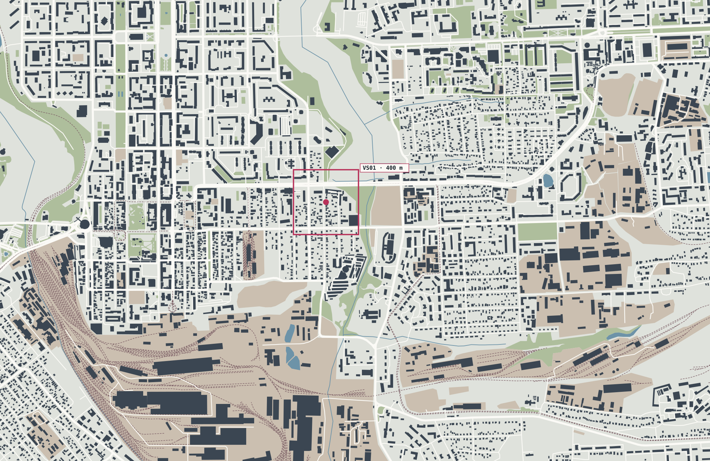
Я не был в Донецке с 2012 года. Поэтому я строю его заново таким, каким он был в октябре 2011-го. Каждая улица, дом и забор восстанавливаются по источникам: OpenStreetMap, радарный рельеф SRTM и панорамы Google Street View того года. Начинаю с Ворошиловского района, где прошло моё детство, и строю весь город.
Я родился в Донецке в 1995 году. Всё детство прошло в Ворошиловском районе: дворы, улицы, дорога от дома до школы. Это моя обитель, место, которое я знаю не по картам, а по памяти.
В 2012 году я уехал. В 2014-м в город пришла война, и дорога назад закрылась. С тех пор я там не был.
Donetsk 2011 для меня единственный способ вернуться: восстановить город таким, каким он был, по фотографиям, картам и панорамам, ничего не выдумывая.
Я начинаю со своего района, но строю весь Донецк. Этот город дорог не только мне. Таких, как я, тысячи.
Станислав, автор проекта
Город до 2014 года на фотографиях жителей и гостей. Все снимки взяты из Wikimedia Commons под свободными лицензиями, у каждого указан автор.
Фото: Wikimedia Commons. Нажмите на подпись, чтобы открыть оригинал и лицензию.
Проект растёт кольцами. Сначала один дом, сверенный с панорамой, потом играбельный коридор, квартал, эталонная карта центра и, в конце, весь Донецк. Каждое кольцо использует те же координаты, так что ничего не приходится переделывать.
Юзовка, Сталино, Донецк. Исторические планы из открытых архивов стоят рядом с картами проекта, собранными из OpenStreetMap. Нажмите на карту, чтобы приблизить.
Команда прошла Заречную по панорамам октября 2011 года в обе стороны и записала только то, что видно в кадре. Пиксели Google в игру не попадают. Каждая точка ниже открывает оригинальную панораму 2011 года в Google Maps.
Подпись адреса в Street View — ближайшая метка карты. Видимый фасад может стоять на другой стороне улицы, поэтому заметки задают зоны стиля, а не доказывают принадлежность участка.
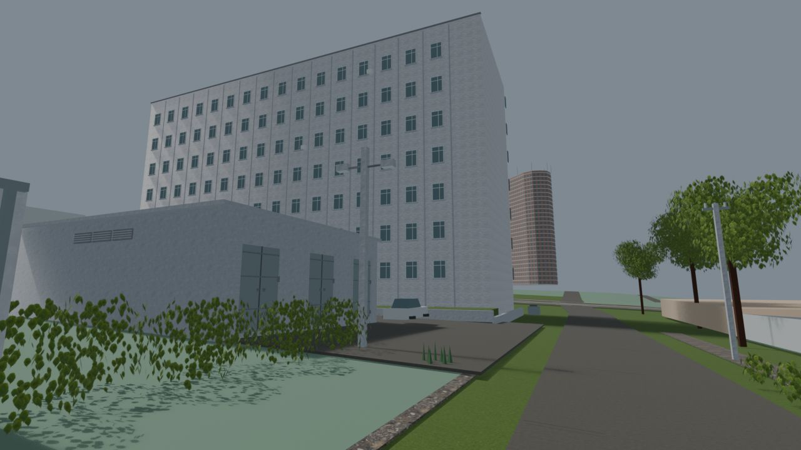
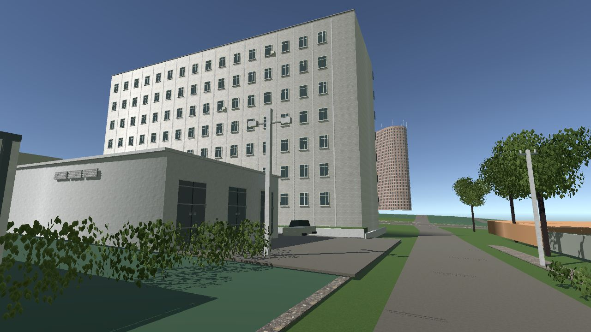
Blender · контрольный кадр Unity · прототипПервый играбельный кусок города: коридор 210 м с 19 участками по адресам 25–38. Цвет показывает тип уличного фасада, записанный по панорамам 2011 года. Нажмите на участок.
Радарная съёмка 11–22.02.2000, сетка 62 × 93 м. Грубая поверхность: бордюры, водостоки и изменения к 2011 году пока не восстановлены.
Рабочие рендеры Blender и Unity-прототипа, без ретуши. Кадры из Unreal Engine 5 появятся здесь по мере работы над срезом. Уже сейчас видно, как строится этюд экстерьера: бетонные заборы, газовые трубы, столбы с тремя проводами, штакетник и шифер там, где их видно на панорамах.
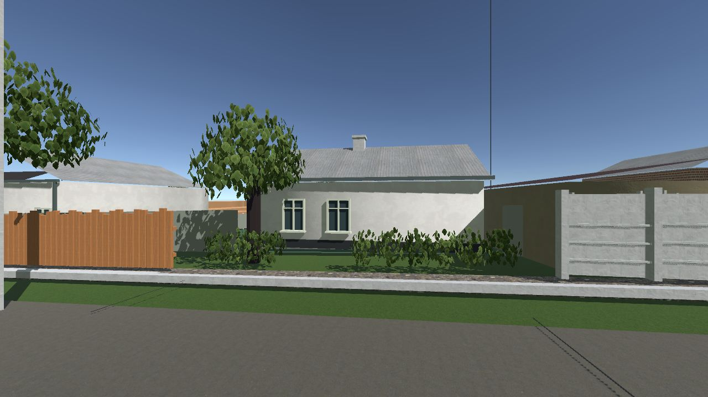
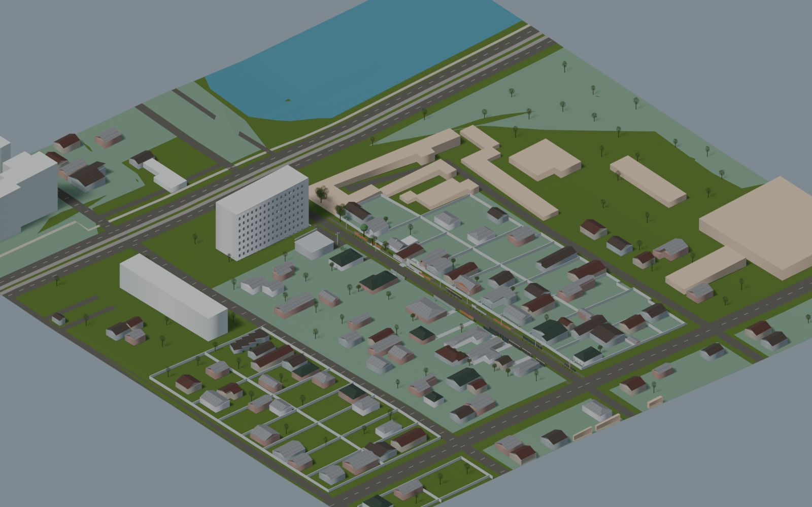
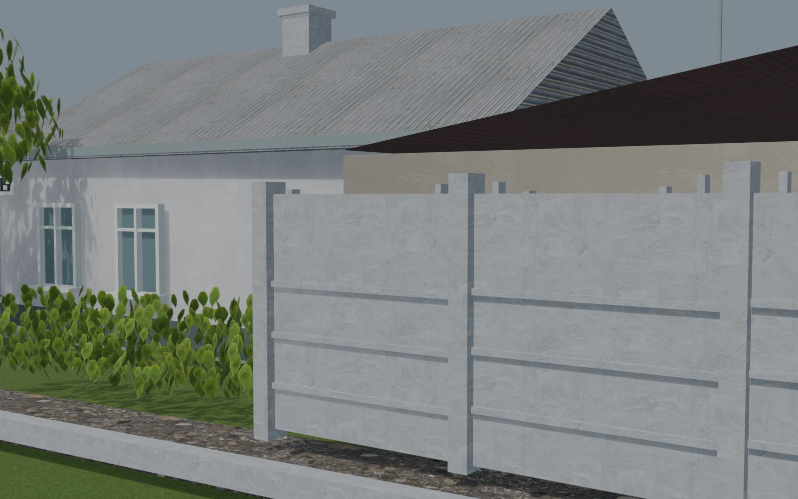
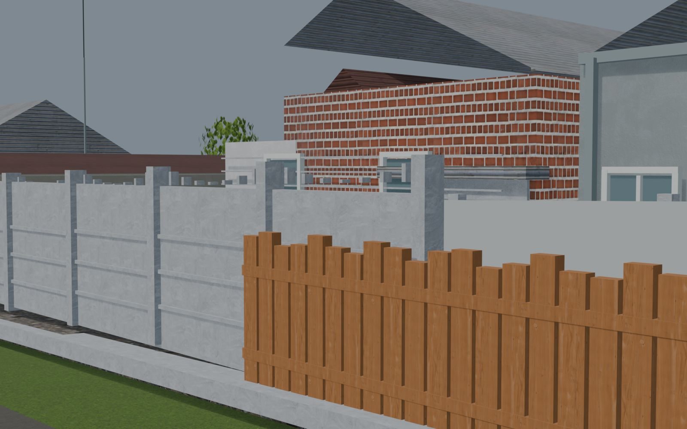
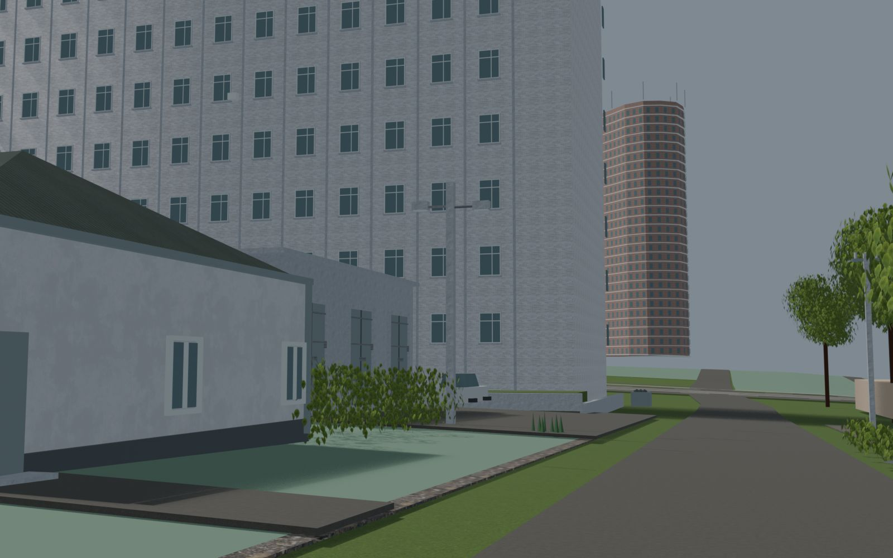
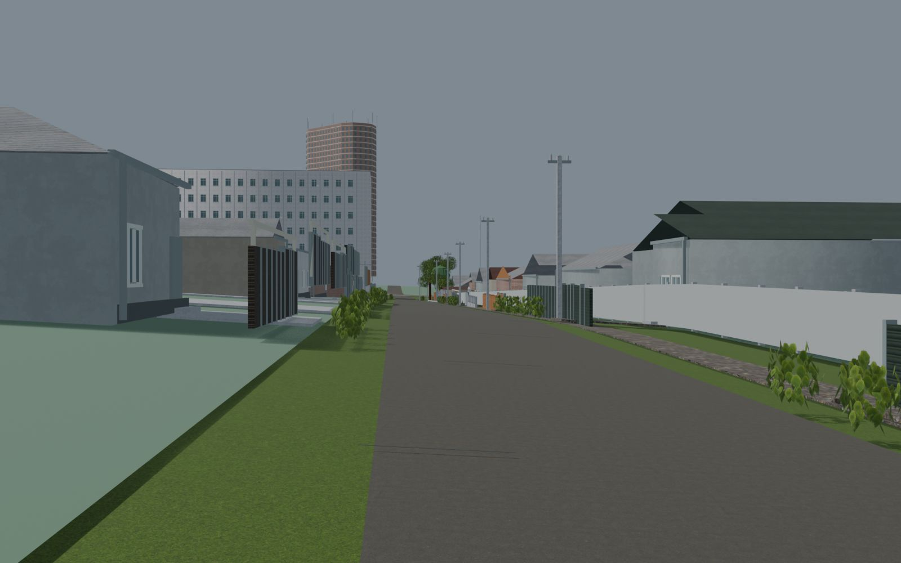
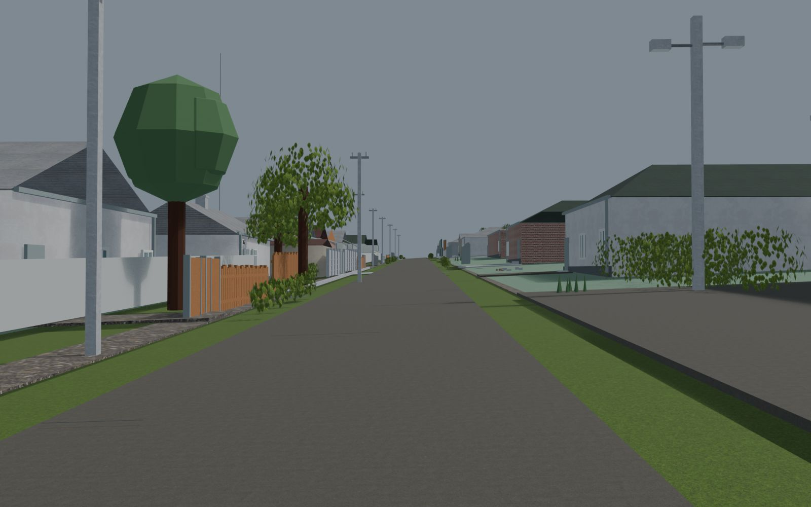
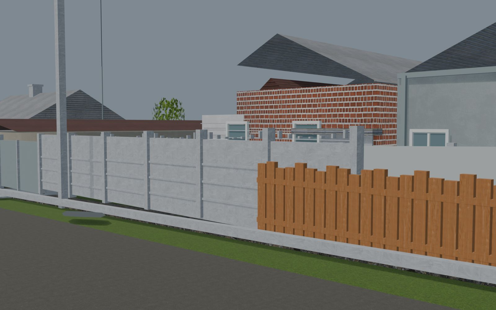
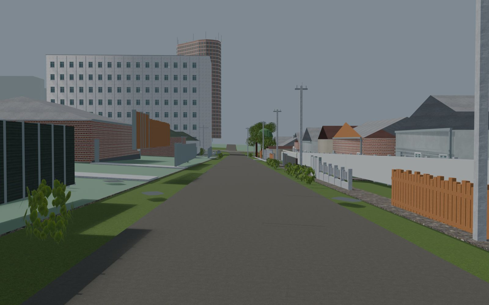
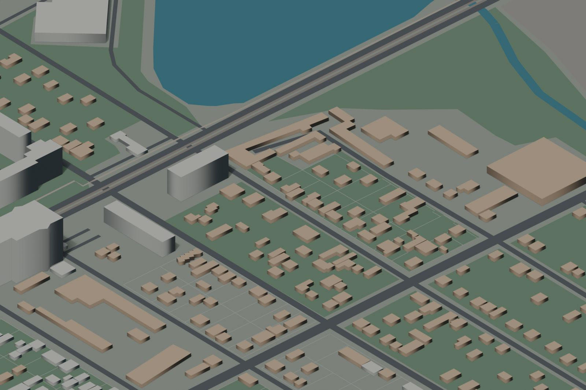
У каждой детали есть класс доказательности. Если окно не видно на панораме, его нет в модели. Если размер оценён на глаз, это записано рядом с ним. Так реконструкция остаётся честной при росте до масштаба города.
Видно на панораме октября 2011: материал, цвет, форма, число окон.
90 опорных объектов · 419 элементов фасадовПятна зданий и оси улиц из OpenStreetMap. Это опора для геометрии, а не доказательство состояния 2011 года.
126 контуров · снимок 22.09.2026Высоты, размеры окон, положения деревьев. Помечены в данных и заменяются, как только найден источник.
71 дерево · 847 столбиков · 106 крышСкрытые фасады, интерьеры, ремонт асфальта, чьи позиции нельзя установить по кадру.
скрытые окна и двери не придумываютсяGoogle и Яндекс используются только как визуальная справка. Их снимки не попадают в игру.
Сначала Заречную собрали и проверили в быстром Unity-прототипе: маршруты, землю, коллизии, сборки. Эти данные и выводы переходят в Unreal Engine 5, где строится сама игра. Координаты, реестр источников и Blender-пайплайн остаются теми же.
Основная платформа Donetsk 2011: открытый мир города, системы трафика и жителей, слой памяти. Работа идёт по этапам, и первый из них, аудит исследования и архитектуры, идёт до написания кода и ассетов.
| Первый этап | M01_RESEARCH_AND_ARCHITECTURE_AUDIT |
|---|---|
| Вертикальный срез | VS01_ZARECHNAYA |
| Размер среза | ≈ 200–300 м, играбельная мини-версия игры |
| Метод | источники → GIS → graybox → арт |
| Документы | игровая библия, мастер-промпты v0.1, концепт v0.2 |
Проверка метода на реальном квартале. Данные, модели Blender и выводы переносятся в Unreal.
| Сцена | квартал 400 м, коридор 210 м, 19 участков |
|---|---|
| Геометрия | 234 415 / 46 930 треугольников (LOD0 / LOD1) |
| Коллизии | 198 коллайдеров · 11 502 треугольника |
| Материалы | 20 семейств поверхностей, 10 ассетов ambientCG CC0 |
Вертикальный срез должен быть играбельной мини-версией финальной игры. Дальше та же технология расходится по району и городу.
Итерации Unity-прототипа, сентябрь 2026
Три точки с источником, ENU-якорем и границей доказательности.
Дистанция и направление к следующей точке, схема маршрута.
Экономичная графика переключает квартал на LOD1.
Стартовая карточка объясняет, где реконструкция, а где оценка.
Тестовые сборки и чистый репозиторий.
Системный открытый мир: трафик, транспорт, распорядок жителей, экономика, реакция города и миссии. Бой не в центре игры. Реальная геометрия важнее удобства левел-дизайна.
«Эхо памяти»: вспышки прошлых лет в реальных местах Заречной. Город, увиденный глазами того, кто здесь вырос.
OpenStreetMap. Контуры зданий, дороги, рельсы, вода. © участники OpenStreetMap, ODbL 1.0. Снимок карты 13.09.2026, квартала 22.09.2026. openstreetmap.org/copyright
SRTM3 v2.1, лист N47E037. Съёмка 11–22.02.2000, EGM96, зеркало Kurviger архива USGS. SHA-256 3c78466e…6d58. USGS EROS
Google Street View, октябрь 2011. 8 панорам Заречной, только визуальные наблюдения. Изображения Google не хранятся и не распространяются.
Королевская башня. Краеведческая статья от 16.08.2012 подтверждает завершение до 2011 года. donjetsk.com
ambientCG. 10 CC0-материалов для 16 привязок поверхностей. Лицензия
Wikimedia Commons. Исторические планы Юзовки, Сталино и Донецка; авторы и лицензии указаны у каждой карты в атласе.